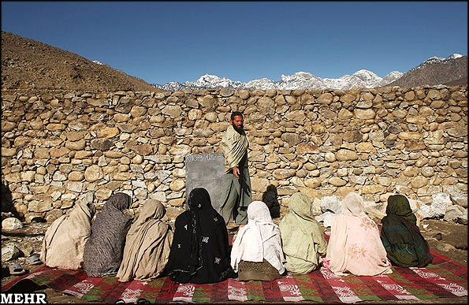

|
|
زنان افغان از برخورداری حقوق اجتماعی تا محرومیت/مریم رحمانی
وضعیت زنان افغان از 1919 تا2011
يكشنبه22 خرداد 1390
اگرچه اسامه بن لادن کشته شد اما مرگ او پایانی بر تفکری که او بنیان گذاشت نیست. طالبان گروهی از بنیادگرایان اسلامی هستند که مدعی اجرای شریعت اسلامی اند در تمامی مناطقی که آنها جولان می دهند وضعیت زنان اسفناک است. افغانستان سرزمینی است که سالها در گیرجنگ و کشمکش های داخلی برسر قدرت بوده است و حقوق زنانش پایمال جنگسالاران طالب و مجاهد، سرزمینی که چندین دهه جنگ در آن فقر و جهل را دامن زد و این دو همیشه دشمن درجه یک زنان هستند. در این فرصت نگاهی کوتاه به وضعیت زنان افغان از 1919 که زنان افغان دارای حق تحصیل شدن تاکنون می اندازیم.
وضعیت وخیم زنان در افغانستان پیشینه ای طولانی تر از دوران طالبان دارد زن ها در دوران شاه امان الله دارای یک سری حقوق شدند و با تغییر حکومت او کم کم هرچه را بدست آورده بودند از دست دادند.

دوران درخشان زن افغانی
زنان افغان در یک دوره 10 ساله یعنی از 1919 تا 1929 در دوره شاه امان الله دارای حق تحصیل و برخی از حقوق مدنی شدند.
نخستين مدرسه دخترانه درکابل در سال ١٣٠٠شمسى به مديريت سراج البنات خواهر شاه امان اﷲ تاسيس شد. ملکه ثريا درسال١٩٢٤ يک بیمارستان مخصوص زنان را درکابل تاسيس کرد. شاه بر مبناى برنامه رفورم هاى اجتماعى، تعدادى از دختران را براى فراگيرى تحصيلات عالى در رشته هاى پزشکی و پرستاری به ترکيه فرستاد. او ازدواج با دختران خردسال راممنوع اعلام کرد و ازدواج مرد با چهار زن به يک زن محدود شد. همچنین شاه امان اﷲ سن ازدواج را براى مردان ٢٢ سال و براى دختران ١٨ سال تعيين کرد. [1]
بنابر تقاضاى ملکه ثريا، در تابستان ١٩٢٨ «انجمن حمايت نسوان» تشکيل شد و دوازده نفر از زنان کابل اداره انجمن را بدست گرفتند. ملکه تعدادى از زنان را درقصر دلکشا ملاقات و به آنها گوشزد کرد که با مردان درکارها سهم مساوى بگيرند. [2]
ملکه ثريا همچنین دادگاهی داير نمود که شکايات زنان را در مقابل شوهران در مواردى، از قبيل ندادن نفقه و ضرب و جرح آنان توسط شوهران شان و يا طلاق دادن بدون دلیل بررسى کند. [3]
در لويه جرگه ١٩٢٨، که زنان هم درآن شرکت داشتند ، کبرا سراج خواهر شاه امان اﷲ به نمايندگى از زنان افغانستان سخنرانى کرد. در روز سوم دادن آزادى براى زنان افغان مطرح شد. در اين روز لويه جرگه حقوق زنان را با مردان مساوى اعلام کرد. [4]
شاه امان اﷲ و ملکه ثريا تا آنجا براى آزادى زنان افغان مبارزه کردند که از جانب روحانیان بنيادگراى متنفذ متهم به کفر شدند برشاه فشار آوردند تا ملکه ثريا را طلاق بدهد و محمود طرزى پدر ملکه ثريا با خانواده اش از کشور تعبيد گردد. شاه زيربار نرفت و سرانجام برسر اين مساله نه تنها تاج و تخت سلطنت را از دست داد، بلکه از کشور نيز تبعيد شد. [5]
وضع زنان پس ازسقوط دولت امانى
با سقوط رژيم امانى بانفوذ روحانیان زنان افغان از تمام حقوق و دست آوردهاى ده ساله رژيم قبلی محروم شدند. دختران دانشجوى افغان که براى تحصيل به خارج فرستاده شده بودند، دوباره از خارج به وطن برگردانده شدند و براى ٩ ماه دروازه هاى مدارس نه تنها به روى زنان بلکه به روى پسران نيز بسته شد. ولى يک سال بعد با روى کار آمدن نادرشاه در رأس دولت افغانستان ، دوباره مدارس براى پسران بازشد، ولى زنان و دختران نزديک يک سال از رفتن به مدرسه محروم بودند. بعد از استقرار ثبات بتدريج زمينه ورود دختران به مدارس در پايتخت ميسر شد، اما زنان ودختران مجبور بودند تا در زير برقع به مکتب بروند و درس بخوانند. اين وضع طاقت فرسا ٣٠ سال دوام آورد تا اينکه درسال ١٩٥٩ در دوران داودخان زنان افغان مجدداً توانستند از حجاب اجباری آزاد شوند. [6]
زنان دوباره به دانشگاه می روند
دردوره ظاهرشاه بعداز ١٩٦٠ و داود خان در دهه ٧٠، زنان به درجه اى از آزادى خود رسيده بودند که در دانشگاه ها درکنار پسران تحصيل مي کردند و براى تحصيلات عالى به خارج فرستاده مي شدند. استادان زن در دانشگاه هاى افغانستان تدريس می کردند و در عرصه بهداشت پزشکان زن از دانشکده طب کابل فارغ التحصیل و مشغول به کار شدند. [7]
مدارس پرستاری و مامایی تعداد قابل ملاحظه پرستار وماما تربیت کرد. زنان هنرمند به راديو ،تئاتر و سينما راه یافتند و در تمام ولايات افعانستان مدراس دخترانه به تعليم و تربيت دختران پرداختند. به طور کلی ده ها هزار زن تعليم ديده و صدها هزار دختر درمرکز و ولايات این کشور در فضاى آزاد و دموکراتيک مشغول فراگيرى دانش بودند. در دانشگاه کابل هزاران زن و دختر دانشجو در رشته هاى طب، حقوق، ادبيات، روزنامه نگاری، تعليم و تربيت، اقتصاد، علوم، زراعت، داروسازى، هنرهاى زيبا و علوم دينى به تحصیل روی آوردند. [8]
زنان تا سال 1992 حق تحصیل، حق کار، حق شرکت در انتخابات را داشتند اما بعد از١٩٩٢ در دوران مجاهدین و طالبان مقام زن دچار تزلزل شد. زنان بيش از هرکس ديگر نه تنها بخاطر از دست دادن شوهر يا برادر و پسر خود در جنگ هاى ميان گروهى تنظيم هاى اسلامى داغدار شدند، بلکه هنگام بيرون رفتن از منزل نيز مورد تحقير و توهين و آزار و اذيت افراد مسلح وابسته به گروه هاى جهادى قرارمي گرفتند. زنان اسیر و مورد تجاوز جنسى قرار مي گرفتند و اگر مشخص می شد که آن زن به گروه جهادى رقيب تعلق دارد، علاوه برتجاوز جنسى، پستان هايش نيز قطع می شد سپس تيرباران و بعد برهنه به جاده پرتاب مي شد. [9]
<
با ورود گروه های اسلامی به کابل و آغاز جنگ ها بخاطر کسب قدرت بيشتر، زنان متحمل بدترين و وحشيانه ترين نوع خشونت ها از جانب مردان مسلح شده اند.
طالبان و حقوقی که از زنان سلب شد
طالبان در ابتدا یک گروه سیاسی نبود بلكه طالب شخصی بود که در مدرسه ديني آموزش ديده است. افغانستان مدرسه علمي نداشت و پسر بچه ها از 5 تا7سالگي از خانواده جدا و راهی پاکستان می شدند و 10 - 15 سال را در مدارس دینی و در فضایی خشن آموزش می دیدند. معلمان به آنها می گفتند راديو گوش دادن حرام است و دیدن تلويزيون گناه. شنيدن صداي زن و حتي شنيدن صداي پاي زن شما را به دوزخ مي برد و این شد که طالبان مردانی زن ستیز شدند.
کم کم در افغانستان بعد از پيروزي مجاهدين ، با توجه به جنگ هاي داخلي و بي نظمي شكل گرفته در آن، راه براي ورود طالبان باز شد. شعار اوليه طالبان اين بود «ما خلع سلاح مي كنيم و امنيت را به جامعه بر مي گردانيم» بنابراین مردم در ابتدا از ورود آن ها استقبال کردند و چه می دانستند که بعدتر این گروه وبال گردن شان می شوند و روز به روز جامعه افغانستان را از انسانیت دور و دورتر می کنند.
طالبان با ورود به هر ايالت مدارس دخترانه را بستند و حمام رفتن را- در افغانستان همه منازل حمام ندارند و مردم برای استحمام مجبور به استفاده از حمام های عمومی هستند- بر زنان ممنوع كردند و گفتند تا برقراري امنيت، مدارس و حمام ها بسته بماند و زنان خارج نشوند.
در 5سالی که طالبان قدرت غالب در افغانستان بود بیشترین محدودیت ها بر زنان اعمال شد. یکی از قوانینی که طالبان وضع کرده بود همراهی زنان با یک مرد محرم در مکان های عمومی بود یعنی زنان به تنهایی نمی توانستند از خانه خارج شوند و اگر زنی از این مقررات سرباز می زد به شدت مجازات می شد.
طبق گزارش وزارت معارف افغانستان درآن زمان400 مدرسه به سبب نا امنی که عامل عمدۀ آن طالبان بود؛ بسته شد و بیشتر از150 هزار شاگرد ازتعلیم وتربیت محروم شدند به گفته وزیر معارف افغانستان 110 نفر آموزگار در دوران طالبان کشته و یکصد نفر زخمی شدند. [10]
در زمان حکومت طالبان يك مسئول گروه بحران سازمان ملل گفته بود که "حقوق زنان افغاني در حال از دست رفتن است. طالبان هر روز بر دامنه خشونت هاي خود مي افزايند. آن ها مي خواهند نشان دهند كه مي توانند هر كاري كه مي خواهند در هر نقطه از افغانستان، حتي مناطق تحت مراقبت امنيتي انجام دهند. شدت حملات طالبان بر مدارس دخترانه افزايش يافته است. برآوردها نشان مي دهد كه به طور متوسط در هر روز يك مدرسه دخترانه بمباران و يك معلم كشته مي شود." [11]
بنا بر گزارش ديده بان حقوق بشر، در چند ناحيه از افغانستان، اين مدارس به كلي تعطيل شدند و هنوز نزديك به يك سوم تمام افغانستان از مدارس دخترانه به كلي محروم است. [12]
با روی کار آمدن طالبان اداره «امر بالمعروف ونهى از منکر» دمار از روزگار زنان برآورد. زنان از حق تحصيل محروم شدند و حتى قیدهای شديدى بر بيرون رفتن زن از منزل بدون محرم شرعى وضع شد. قوانين سنگسار زنان و دست و پاى بريدن هاى اسلامى رونق گرفت و استاديوم ملى بجاى مسابقات ورزشى، به ميدان قصابى انسان ها تبدیل شد. رفتن زن مريض به نزد دکتر مرد قدغن شد، و اکثر مادران در هنگام زايمان به علت عدم معاینه دکتر مرد جان مي دادند. رانندگان تاکسى و اتوبوس ها اجازه نداشتند زنانى را سوار کنند که برقع يا چادرى نپوشيده و بجاى آن از روسرى يا چادر ايرانى استفاده مي کردند. [13]
هر مردى اگر با زنى بيرون مي رفت بايد اسنادى که محرميت زن و مرد را ثابت مي کرد باخود داشت، در غير اين صورت هردو به عنوان زن و مرد بدکاره با سرنوشت شومى روبرو مي شدند. بدين سان زنانى که محرم شرعى نداشتند و يا بيوه بودند حتى براى خريد يک لقمه نان خشک از نانوایى دچار رنج فراوان بودند. برخى از بيوه زنان که پسر يا مرد محرم نداشتند دختران کمتر از ده سال خود را که هنوز به بلوغ نرسيده بودند، به شکل پسر در مى آوردند و لباس پسرانه مى پوشاندند و براى خريد مايحتاج بيرون مى فرستادند. اگر زنى با محرم شرعى خود بيرون مي رفت حق نداشت آرايش کند و لباس مد روز و تميز بپوشد مبادا مردان بالغ دچار وسوسه شوند. [14]
مجازات زنان در پیش چشم شوهران
هرگاه موى سر زنان از زير چادر بيرون آمده بود، و يا پاچه گلدوزى شلوار زنان ديده مي شد، زن را در پيش روى مردش باچوب و يا زنجير مي زدند .استاد نگارگر، نويسنده نامدار افغانى از يک صحنه دلخراش کتک زدن زنی باردار توسط طالبان حکايت مي کند که نشان مي دهد اين گروه بى سواد و متحجر تا چه حد از زندگى و آداب اجتماعى به دور بودند. او مي نويسد که" طالبى زن حامله اى را که روى بند چادرى خود را بالازده و در حاشيه خيابان استفراغ مي کرد، دُره (شلاق) مي زند و زن عاجزانه وضع خويش را به او مي گويد ولى آن طالب بجاى خجالت بازهم او را مى زند و مي گويد؛ بدبخت حامله که بودى چه مرگ مي خواستى که از خانه بيرون آمدى؟" [15]
"مولوی" ایی که زنان را دشمن می داشت
زنان افغانستان، به ويژه زنان کابل به اين زودى ها نمي توانند «مولوى قلم الدين» وفرمان هاى هراس آور و بعضاً عجيبش را ازياد ببرند. در اوايل ورود طالبان به کابل که شهروندان کابل هنوز ياد نگرفته بودند چگونه خودشان را با فرمان های مولوى قلم الدين رئيس اداره «امر به معروف ونهى ازمنکر» تطبيق دهند، بسيارى از زنان و دختران سوزش اصابت شلاق ماموران خشن و عبوس تحت امر وى را درساق پاهايشان حس کردند. دريکى از فرمان های اداره «امر بمعروف ونهى ازمنکر» راجع به زنان چنين آمده بود: « پوشيدن لباس هاى شيک، تجملى، تنگ و جذاب و استفاده از تزئينات و لوازم آرايش توسط زنان ممنوع است. زنان بايد وقار خود را حفظ کنند، کفش هاى پاشنه بلند نپوشند، آرام راه بروند تا هنگام راه رفتن صداى کفش شان را مردان نامحرم نشنوند. درغير اين صورت ملعون شريعت اسلامى خواهند بود و نبايد انتظار بهشت را داشته باشند.» [16]
حساسيت ويژه مولوى قلم الدين نسبت به زنان و دختران تنها به ساکنان کابل محدود نشد. فرمان هاى او عطف به ماسبق هم مي شد و حتى به زنانى که چندين قرن پيش مي زيستند نيز سرايت پيدا کرد. مقبره رابعه بلخى شاعر مشهورقرن چهارم هجرى درشهر بلخ (واقع در٢٠ کيلو مترى غرب مزارشريف) قرار دارد. درتاريخ ادب فارسى ، او اولين زنى است که اشعار ماندگار و عاشقانه سرود. رابعه دختر يکى از اشراف بلخ بود که عاشق يک برده بنام بکتاش شد وقتى برادرش از اين راز آگاه شدند، به عنوان مجازات ، شريانهاى دست خواهرش را قطع کردند تا بسختى جان بدهد. [17]
در افغانستان دختران وپسران جوان افغان آرامگاه او را به عنوان اسوه عشق و دلدادگى زيارت مي کنند. اداره «امر به معروف و نهى از منکر» طالبان پس از تسخير مزارشريف ، بازديد ازمقبره رابعه بلخى را نيز به دليل اينکه آرامگاه يک «زن» است و امکان دارد زيارت آن ، مردان و جوانان را آلوده به شهوت و گناه کند، ممنوع اعلام کرد. [18]
وضع زنان افغان پس ازسقوط طالبان:
با سقوط طالبان و روی کار آمدن دولت حامد کرزای قوانین خوبی برای حمایت از زنان وضع شد مانند افزایش سن ازدواج برای دختران که 16 سال است و سهم 25درصدی زنان ازکرسی های مجلس این کشور.اما پایان طالبان پایان کابوس های زنان افعانستان نبود. هرچند مدارس دخترانه بازگشایی شد و زنان حالا می توانند سرکار هم بروند حتی پلیس هم باشند اما آمارها حاکی از آن است که نگاه زن ستیز و مردسالار در افغانستان همچنان به قوت خود باقی است. فقر و جهل دو وجه تداوم خشونت علیه زنان هستند و سرزمینی که سال ها دچار جنگ و درگیری های داخلی بوده است راه زیادی برای از بین بردن نگاه نابرابر به زن در پیش دارد.
خشونتی که پایان ندارد
پس از حادثه ١١سپتامبرسازمان نظارت برحقوق بشر سازمان ملل متحد در گزارش سالانه خود در دسامبر ٢٠٠٢ ابراز نگرانى کرد که زنان و دختران در بخش هايى از افغانستان همچنان تحت فشار و محدويت هاى شديد، مزاحمت و بدرفتارى قرار دارند. [19]
اين سازمان در گزارش خود از وضعيت زنان در هرات به سوء رفتار پليس با زنان ، معاينه اجبارى براى اثبات باکرگى و محدوديت هايى اشاره مي کند که يادآور دوره طالبان است. با اين همه سازمان نظارت برحقوق بشر در گزارش خود به بهبود شرايط زنان و دختران بعد از سقوط طالبان اشاره دارد. اکنون آن ها مي توانند به مدرسه و دانشگاه بروند، اما از نظر سياسى و اجتماعى گزارش به شواهدى اشاره مي کند که حاکى از فشارو سرکوب است. [20]
سازمان عفو بين الملل در گزارش منتشره ٢٠٠٣ اشاره کرد: دوسال پس از سقوط طالبان هنوز هم در وضع زنان افغانستان بهبود قابل ملاحظه پديد نيامده و آنان به طور گسترده با ازدواج هاى اجبارى، تجاوز هاى جنسى، و خشونت هاى خانوادگى روبروند. در بعضى مواردحتى دخترکانى ٨ ساله به عقد مردان بسيار سالمند در آمده اند. تقرر مولوى شينوارى رئيس دادگاه عالى افغانستان، ٩ عضو شوراى عالى و ١٣٧ ملا، روش مجازات طالبان را براى اجراى قانون شرعى تاييد مي کند. بنابراين گزارش شکايت ضرب وجرح و يا تجاوز به زنى اگربه طور معجزه آسايى به دادگاه عالى برسد، دراغلب موارد برخورد با آن چنين است:« اين زن چه کارى کرده است که موجب تحريک مجرم به انجام اين اعمال شده است؟» در نتيجه خود زن مسئول اين عمل محسوب شده ، به بهانه حفظ جانش براى مدت نامعلومى به زندان سپرده مي شود. [21]
براساس گزارش سازمان عفو بین الملل در سال 2004گزارش های متعددی از ربوده شده و تجاوز به دختران توسط گروه های مسلح در افغانستان ارائه شده است. بر اساس این گزارش ترس از ربوده شدن در مناطق مختلف افغانستان فعالیت های زنان را با محدودیت مواجه کرده است. در افغانستان ازدواج اجباری و تبادل دختران برای تسویه حساب ها و پایان دادن به به نزاع ها امری معمول است.
سازمان عفو بین الملل برآورد کرده است که در تمام نقاط این کشور به خصوص در هرات زنان برای فرار از وضعیت بد زندگی دست به خودسوزی می زنند. [22]
هم اکنون براساس آمارهای سال 2008 نه تنها خشونت علیه زنان در افغانستان کم نشده بلکه بیشتر هم شده است.افغانستان رتبه اول خشونت علیه زنان را در جهان داراست. ضرب و جرح، قتل، تجاوزجنسی، ازدواج های اجباری و قبل از سن قانونی از جمله خشونت ها علیه زنان در افغانستان است. [23] هرچند در سال 88 قانون منع خشونت خانگی در افغانستان تصویب شده است باید دید تصویب این قانون در کوتاه مدت و دراز مدت چه تاثیری بر وضعیت زنان این کشور خواهد داشت.
قاچاق زنان افغان به کشورهای مختلف
بى بى سى در سال ٢٠٠٣ از خريد وفروش و شکنجه زنان شوهردار تا مرز قتل فجيع آنها در صورت عدم قبول يا فرار زن از چنگ شوهر دومى گزارش داد.
پادينه هيله، فعال حقوق زنان مي گويد: «تا حالا اوضاع با وقتى که طالبان برسرکار بودند هيچ فرقى نکرده است . او مي گويد، زنى را مي شناخته که از خانه اي که به آن فروخته شده بود فرارکرده و به خانه برادرخود بازگشته بود، اما در خانه برادر او را مجازات کردند. ابتدا آب جوشان بر بدنش ريختند وبعد با کابل در پشت ماشين بسته شد و روى زمين کشانده شد و سپس براو شليک کردند. گويا اين درس عبرتى بود براى زنانى که وقتى آنها را فروختند، اعتراض نکنند.»
در شينوار هر زن حدود سه هزار دلارفروخته مي شود که انگيزه آن تنبيه يا پولى است که خانواده يا شوهر زن دريافت مي کند. [24] در مناطق دوردست ولایت تخار زنان و کودکان افغان به منظور استفاده جنسی به تاجیکستان قاچاق می شوند. [25]
مرگ و میر و افسردگی شدید زنان افغان
براساس برآورد وزارت صحت افغانستان از هر 100هزار زن در هنگام وضع حمل در این کشور 1600نفر جان خود را ازدست می دهند. به گفته وزیر صحت وقت افغانستان در سال 85 این میزان تلفات در هیچ کشور دیگری دیده نشده و تکان دهنده است. افغانستان از لحاظ میزان مرگ و میر مادران هنگام زایمان رتبه دوم را در جهان دارد. [26]
همچنین سالانه 2هزار و 300زن بین 40-15سال در افغانستان به علت افسردگی شدید خودکشی می کنند هم اکنون 2میلیون زن افعان به افسردگی شدید و بیماری های روانی مبتلا هستند. فیض محمدکاکر مشاور رئیس جمهور افغانستان در امور صحت گفته میزان خودکشی در بین زنان افغان افزایش یافته است. [27]
امضای قانون "احوال شخصیه" در سال 87 توسط حامد کرزای که حقوق انسانی یک زن را نادیده می گیرد نشانههای بارز بیتفاوتی دولت به تحقق حقوق زنان در افغانستان است. این قانون نه تنها با قانون اساسی افغانستان در تضاد است، بلکه با اعلامیههای جهانی حقوق بشر و پیمانهای بینالمللی حقوق بشر مغایرت دارد هرچند این قانون پس از اعتراض های شماری از زنان تعدیل شد.
از طرف دیگر، اصرار کرزای بر مذاکره غیرشفاف و به اصطلاح آشتی با "برادران طالب"، نگرانیهای جدی را بین فعالان حقوق زن در افغانستان به وجود آورده و به این هراس را دامن زده که مبادا با این صلح قوانین شدید جداسازی جنسیتی در این کشور دوباره حاکم شود. بهر حال باید دید زنان افغان برای رسیدن به حقوق حقه خود چه فعالیت هایی را در آینده مدنظر دارند.
يادداشت
[1] http://www.vatandar.com/web/ketab/z...
[2] همان
[3] همان
[4] همان
[5] همان
[6] همان
[7] همان
[8] همان
[9] همان
[10] www.nargishashimi.blogfa.com...
[11] همان
[12] همان
[13] www.vatandar.com/web/ketab/z...
[14] همان
[15] همان
[16] همان
[17] همان
[18] همان
[19] همان
[20] همان
[21] همان
[22] همان
[23] www.mardomsalari.com/templat...
[24] www.nargishashimi.blogfa.com...
[25] www.balkhjournalism.blogsky....